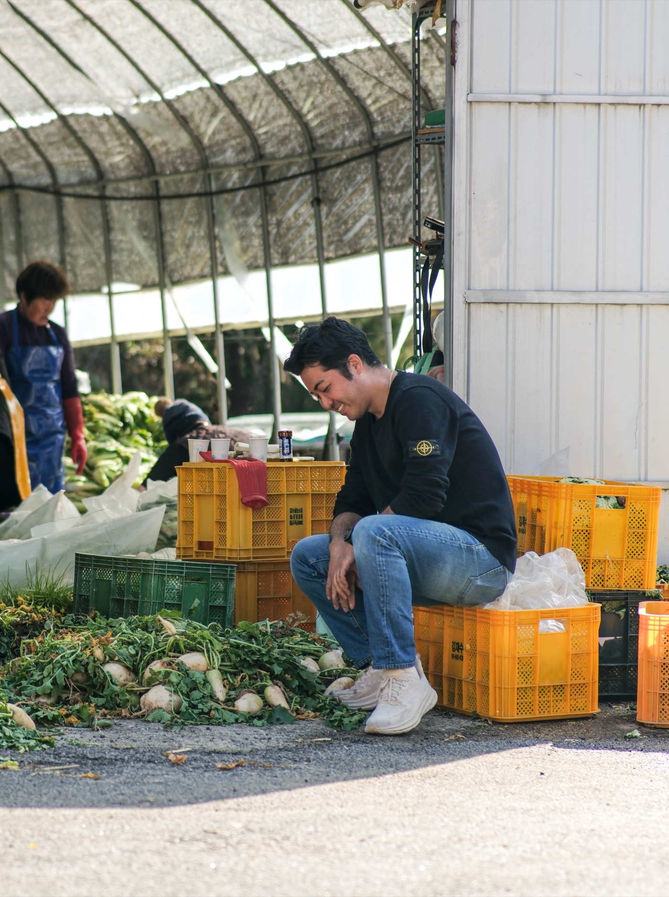
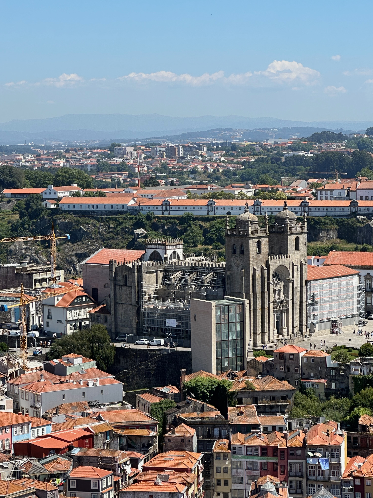
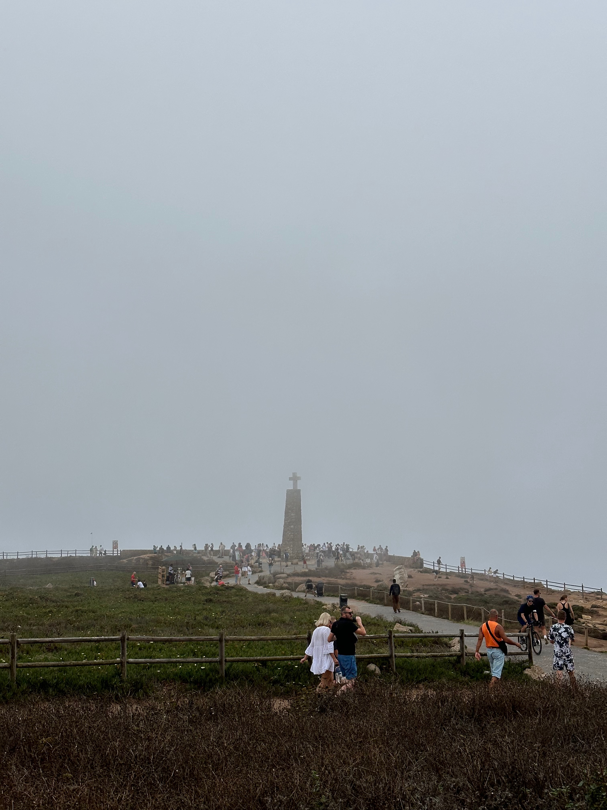

Experience Hub
Thoughts, records, and field notes collected as an editorial archive.
Essays, travel writing, observations, and short studies gathered into one place. This page is designed less like a project gallery and more like a reading room: slower, clearer, and organized by what kind of text you want to enter.
Articles
연구 및 에세이
 Urban quality assessment
Urban quality assessment
Measuring what we care about through images, notes, and digital tools
A concise article format for turning process into an elegant, readable archive.
 City making
City making
Closing the gap between cinematic presentation and useful information
How immersive visuals can still support clarity, trust, and practical reading.
Publications
외부 기고 및 출판
 Wellness
Wellness
계절의 변화를 감각하는 찻자리, 초심헌
Chosimheon: A Tea Gathering That Perceives the Changing of Seasons
차와 식물, 그리고 계절의 리듬으로 삶의 균형을 회복하는 웰니스 라이프스타일에 대한 기록.

Wellness나의 몸은 내가 먹은 것으로부터
My Body Is Made of What I Eat
좋은 식재료와 발효의 철학으로 몸의 회복과 공동체의 건강을 이야기하는 웰니스 라이프스타일 기록.
 Portrait
Portrait
패러다임 전환의 시대
The Age of Paradigm Shift
호텔 개발을 넘어 웰니스와 리트릿으로 확장되는 한이경 대표의 시선과 공간 철학에 대한 글.
 Focus
Focus
몰입과 안정감 속에서 보내는 일주일
A Week of Focus and Belonging
제주 탑동의 리플로우 제주가 창의적인 사람들을 위한 몰입과 연결의 베이스캠프가 되는 방식을 기록한 글.
 Focus
Focus
한옥마을에서 만난 덴마크 미니멀 디자인
VOLA Seoul Showroom in a Bukchon Alley
가회동 골목에서 한옥과 덴마크 미니멀 디자인이 만나는 볼라 서울 쇼룸의 공간 철학을 기록한 글.
 Spot
Spot
건축가의 서재에 머무르다
Maha Hannam: A Cafe Where an Architect's Library and Studio Meet
오래된 목욕탕 건물의 4층을 카페와 건축사사무소로 되살린 마하 한남의 공간 철학을 담은 글.
 Spot
Spot
배부르게 먹고 신나고 즐겁게 떠들고
pub blanc: A Neighborhood Beer House for Eating Well and Talking Loudly
당산동 골목의 펍블랑이 취향과 재사용의 감각으로 만든 다정한 동네 맥주집의 이야기를 기록한 글.
 Spot
Spot
따뜻한 햇살과 든든한 나무가 되어 주는 곳
A Place That Becomes Warm Sunlight and a Steady Tree
경리단길 주택가의 공유오피스 썬트리하우스가 보여주는 지속 가능한 공동 작업 문화에 대한 글.

Travel Essay포르투, 무엇으로부터 매력을 느꼈는가
Porto: Where Atmosphere Becomes a Place
포르투의 건축과 경관 너머, 도시를 살아 숨 쉬게 하는 분위기와 생활의 리듬을 기록한 글.

Travel Essay유럽의 땅끝에 가다
Journeying to the Edge of Europe
호카곶과 사그레스 요새를 걸으며 유럽의 땅끝에서 감각과 역사로 포르투갈을 읽어낸 기록.
 Travel Essay
Travel Essay
60년의 여정, 건축은 멈추지 않는다
A Journey of Sixty Years: Architecture Never Stops
알바루 시자의 레사 조수 풀장을 통해 건축이 시간 속에서 계속 완성되어 가는 과정을 바라본 기록.
 Travel Essay
Travel Essay
시민에게 사랑받는 축구 클럽과 채석장 위에 세워진 경기장
A Football Club Beloved by Its Citizens and a Stadium Built Above a Quarry
브라가 시립 경기장을 통해 공공성, 재정, 지형과 건축이 겹쳐지는 장면을 기록한 이베리아반도 유랑기 4편.
 Travel Essay
Travel Essay
미술관 곁에는 늘 정원이 있었다
There Was Always a Garden Beside the Museum
세할브스, 굴벤키안, 파울라 헤구 미술관을 통해 미술관과 정원의 관계를 다시 읽어낸 이베리아반도 유랑기 5편.
 Workshop Review
Workshop Review
마음껏 상상을 펼쳤던 '미래의 예술공간 함께 상상하기' 워크숍
공간, 커뮤니티, 한 사람이라는 세 키워드로 돌아본 패치워크 워크숍 참여 후기.
Latest Notes
Shorter reflections, atmosphere studies, and recent additions
몰입과 안정감 속에서 보내는 일주일
A Week of Focus and Belonging
창의적인 사람들의 아지트 리플로우 제주가 일과 머묾, 커뮤니티를 어떻게 엮는지에 대한 기록.
Focus한옥마을에서 만난 덴마크 미니멀 디자인
VOLA Seoul Showroom in a Bukchon Alley
가회동 북촌 골목에서 한옥과 수전 브랜드의 미니멀 철학이 만나는 장면을 기록한 글.
Spot건축가의 서재에 머무르다
Maha Hannam: A Cafe Where an Architect's Library and Studio Meet
동빙고동 오래된 목욕탕 건물 위에 들어선 마하 한남이 건축과 일상을 어떻게 연결하는지에 대한 기록.
Spot배부르게 먹고 신나고 즐겁게 떠들고
pub blanc: A Neighborhood Beer House for Eating Well and Talking Loudly
영등포구청역 인근 골목의 펍블랑이 보여준 다정하고 자립적인 동네 상업 공간의 가능성.
Spot따뜻한 햇살과 든든한 나무가 되어 주는 곳
A Place That Becomes Warm Sunlight and a Steady Tree
경리단길 주택가의 썬트리하우스가 혼자 일하는 사람들에게 동료적 연대를 어떻게 제공하는지에 대한 기록.
Travel Essay포르투, 무엇으로부터 매력을 느꼈는가
Porto: Where Atmosphere Becomes a Place
포르투라는 도시의 분위기를 건축과 거리의 생활 감각 속에서 읽어낸 이베리아반도 유랑기의 첫 기록.
Travel Essay유럽의 땅끝에 가다
Journeying to the Edge of Europe
호카곶과 사그레스 요새를 직접 걸으며 유럽의 끝과 탐험의 감각을 기록한 이베리아반도 유랑기 2편.
Travel Essay60년의 여정, 건축은 멈추지 않는다
A Journey of Sixty Years: Architecture Never Stops
레사 조수 풀장을 통해 완성이 아닌 지속의 과정으로서 건축을 다시 읽어낸 이베리아반도 유랑기 3편.
Travel Essay시민에게 사랑받는 축구 클럽과 채석장 위에 세워진 경기장
A Football Club Beloved by Its Citizens and a Stadium Built Above a Quarry
브라가 시립 경기장의 원초적 공간감과 공공적 의미를 따라간 이베리아반도 유랑기 4편.
Travel Essay미술관 곁에는 늘 정원이 있었다
There Was Always a Garden Beside the Museum
세 미술관의 정원을 통해 예술과 삶을 잇는 공간의 역할을 살핀 이베리아반도 유랑기 5편.
Workshop Review마음껏 상상을 펼쳤던 '미래의 예술공간 함께 상상하기' 워크숍
예술공간을 함께 상상하는 워크숍을 통해 공간, 커뮤니티, 개인의 변화를 되짚은 기록.
Portrait패러다임 전환의 시대
The Age of Paradigm Shift
전 지구적 패러다임 전환 속에서 호텔과 웰니스, 리트릿을 다시 읽는 한이경 대표의 관점.
Wellness나의 몸은 내가 먹은 것으로부터
My Body Is Made of What I Eat
치유와 회복의 경험에서 출발해 건강한 식문화를 사회 전반으로 넓혀가는 이야기.
Wellness계절의 변화를 감각하는 찻자리, 초심헌
Chosimheon: A Tea Gathering That Perceives the Changing of Seasons
차와 식물, 계절의 감각으로 일상의 균형을 회복하는 웰니스 라이프스타일에 대한 글.
Our StoryA message from the studio on building a softer, clearer portfolio
Recent reflections on visual restraint, atmosphere, and narrative pacing.